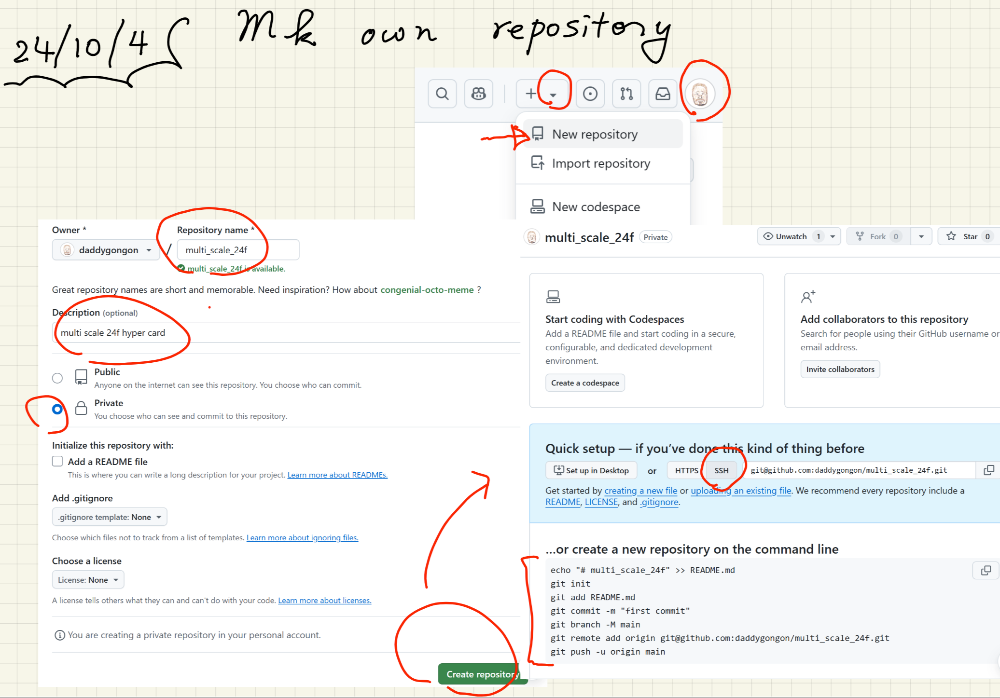
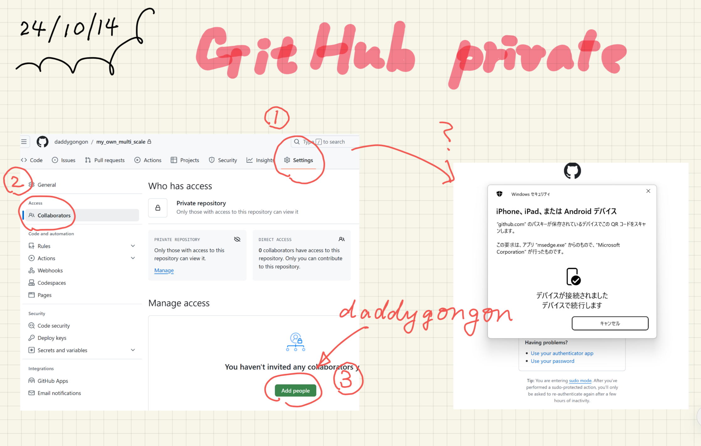

make private on github
Table of Contents
1 mv daddygongon
mv multi_scale_24f daddygongon# on wsl
2 mk own repository
- named multi_scale_24f
- select private!
- follow the instruction on github
|  |
3 git
3.1 git init config
git config --global user.name "Shigeto R. Nishitani"git config --global user.email "nishitani@hoge.hage.ha"git config --global core.editor "emacs"git config pull.rebase false
3.2 git basic commands
git add -Agit commit -m 'first commit'- or
git commitand edit on emacs
- or
git pull origin maingit push origin main
4 github作り直しメモ
- 古いuser idを削除
- 新しいuser id作成
- sshのcopy
- mk own repository(新しいrepositoryを作って，remote addressをcopy)
git remote rm origingit remote add origin git@github.com:******/multi_scale_24f.git- 上のgit basic commandsを参照
5 privateが見れる設定
|  |